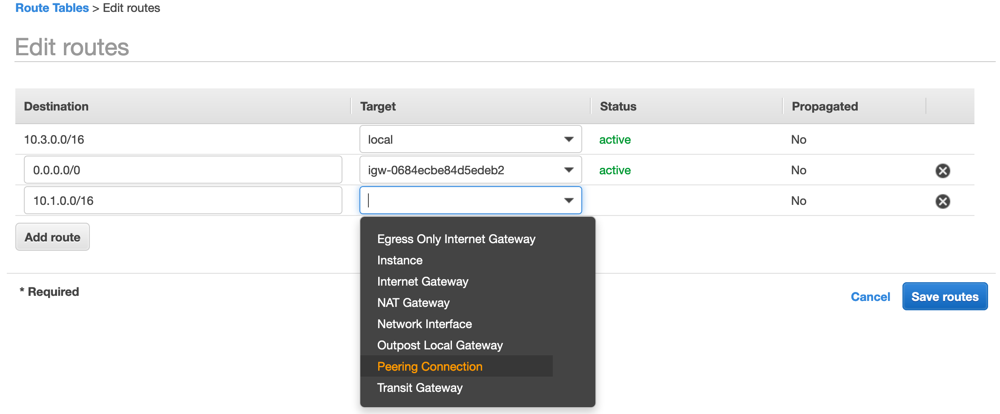

请确保操作的区域是 AWS新加坡区域（ap-southeast-1）。
在VPC console中选择Peering Connnections按钮，点击Create Peering Connection
输入Peering connection name tag、VPC (Requester)为Spoke-3、VPC (Accepter)为Spoke-1
选择目标
点击Creating Peering Connection
观察现在的Peering Connection 为Pending Acceptance状态
点击Actions，选择Accept Request
选择Yes，Accept
此处的截图的区域其实并不是新加坡区域，所以截图的Region仅供参考，请学员操作时务必确保在新加坡区域。
观察现在的Peering Connection 为Active状态
点击Route Tables，选中Spoke1，点击Edit routes：
添加一条路由，Destination为10.3.0.0/16，Target 选择Peering Connection
选择上一步创建好的Peering Connection ID，选择Save Routes
同样，更新Spoke3路由表，点击Route Tables，选中Spoke3，点击Edit routes：
添加一条路由，Destination为10.1.0.0/16，Target 选择Peering Connection

选择前面创建好的Peering Connection ID，选择Save Routes
远程登录EC2实例Spoke1-sub-1a，PingEC2实例Spoke3-sub-1a
cd <lab3.pem文件所在目录>
chmod 400 lab3.pem
ssh -i lab3.pem ec2-user@<PUBLIC IP of Spoke1-sub-1a>
然后ping
Ping通，证明VPC Peering正常工作